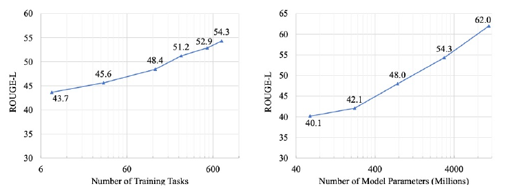
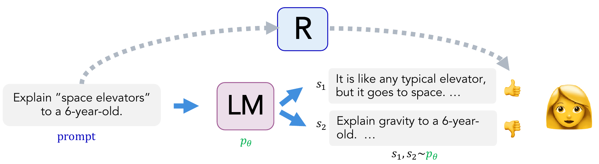
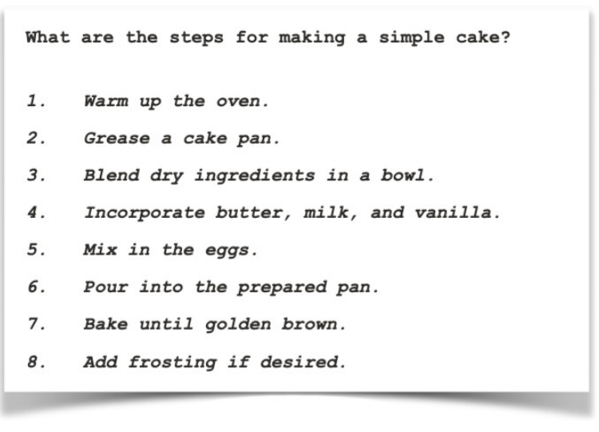

A demonstration says “produce this response.” A preference says “of these two responses, this one is better.” Those records teach different things. We will design an unseen-task evaluation, turn comparisons into a scalar reward model, and follow its loss from a probability model into working code.
- Scope
- Slides 1–23 of the post-training deck, through the final reward-model pulse check. Slide 24 starts policy optimization, which is outside this handout. Slide numbers here match PDF pages.
- Assigned papers
- None. This handout is the reading for Session 18; linked papers and the optional code reading provide supporting context.
- Time
- 35–45 minutes for §1–§5 and their exercises; 20–25 minutes for quiz practice in §6. Optional: 35–45 minutes for the CPU lab, PyTorch walkthrough, and upstream code reading in §7.
- By the end
- Distinguish new examples from unseen tasks; specify a preference rubric and data split; compute expected reward; derive and implement a pairwise reward loss; diagnose reward-score and padding mistakes.
- Prerequisites
- Handout #17 explains response-only SFT and freezing. Handout #5 supplies gradients; Handout #12 distinguishes masks. We use $x$ for a prompt including context, $y$ for a complete response, $\theta$ for policy parameters, and $\phi$ for reward-model parameters.
Slide-to-reading map
- 1–3 → the two datasets and model roles below.
- 4–8 → §1: instruction tuning, task splits, and interpreting scaling plots.
- 9–10 → §1.3: what demonstrations do and do not establish.
- 11–15 → §2–§3: comparisons, rubrics, and the generation episode.
- 16–17 → §3: expected reward over prompts and sampled responses.
- 18–21 → §2 and §4: preference data and the pairwise probability/loss.
- 22–23 → §5 and §7: stable implementation and checks.
1Instruction tuning: what counts as generalization?
1.1 Same loss family, different data
Instruction tuning is SFT over instruction–context–response examples, often spanning many tasks. Its next-token loss typically scores the demonstrated response conditioned on the prompt. We already built that loss in Handout #17. The new question is what the collection of tasks teaches and how to evaluate transfer.
Imagine training on sentiment labeling and entity extraction. Testing on new sentiment reviews measures new-example performance. Testing sentiment on another review domain measures domain transfer. Holding out summarization entirely, then providing a summarization instruction at evaluation, tests transfer to a task type not used for tuning. These are distinct claims.
A team trains on 100 instruction templates. Which evaluation supports a claim about unseen task types?
- Randomly hold out 20% of examples from every template.
- Rewrite sentiment instructions in new words but retain sentiment training examples.
- Hold out every summarization task and related templates, train on other task families, and evaluate summarization on disjoint source documents.
What should the team decide before looking at results?
Predict, then reveal
Only plan 3 directly tests the stated claim. Plan 1 is new-example evaluation; plan 2 tests instruction paraphrases. Define task families and holdout rules in advance, remove near-duplicate instructions/documents across splits, and keep a final test set separate from development tasks used to tune settings. “Unseen” means excluded from this tuning dataset; it does not establish absence from pretraining.
1.2 Count diversity and report the right average
A thousand differently worded sentiment prompts need not provide a thousand different reasoning skills. Task counts depend on taxonomy, and training mixtures determine which skills receive most updates. Compare mixtures at a stated token/example budget rather than attributing every improvement to task count alone.

A held-out set has 1,000 sentiment examples at 90% accuracy and 100 summarization examples at 40% exact match. For this toy calculation only, treat both scores as binary success. Compute the example-weighted success rate and the mean of the two task success rates. Which answers “how well does the model perform on a typical task” if tasks are equally important?
Predict, then reveal
Example-weighted: $(1000\times0.9+100\times0.4)/1100=85.45\%$. Task-weighted: $(90+40)/2=65\%$. The latter gives equal weight to each task; the former describes this example mixture. In a real benchmark, do not average unlike raw metric scales without a justified convention. Report per-task results and the aggregation rule.
1.3 A demonstration is neither a verifier nor a knowledge guarantee
For “Explain space elevators to a six-year-old,” a useful demonstration must be understandable, relevant, and careful about what is hypothetical. SFT increases the likelihood of its target text; the loss does not independently check those properties. Several different explanations can all be good, even though only one appears as the target.
Data coverage matters: if every demonstration confidently answers a factual question, the dataset may fail to teach appropriate uncertainty when information is unavailable. This does not mean SFT cannot teach facts or that it inevitably creates hallucinations. Gekhman et al. study a controlled closed-book QA setting and identify a risk when demonstrations introduce knowledge the model does not reliably possess. Diagnose behavior on answerable and unanswerable cases; confidence and polished wording do not establish truth.
2From demonstrations to comparisons


2.1 What an annotator actually supplies
Keep the same prompt: “Explain space elevators to a six-year-old.” Candidate A explains a proposed very long cable that a vehicle could climb to space and notes that it has not been built. Candidate B explains gravity without answering the question. Under a rubric emphasizing relevance, understandable language, and factual care, an annotator prefers A.
# Simplified comparison record; no numerical reward label is required.
{
"prompt_id": "space-elevator-01",
"prompt": "Explain space elevators to a six-year-old.",
"chosen": "Imagine a very long cable ... It is a proposed idea ...",
"rejected": "Gravity pulls things toward Earth ...",
"rubric_version": "relevance-clarity-factual-care-v1"
}The record says A beats B for this prompt and rubric. It does not assign A an absolute score, certify every statement in A, or specify how A compares with an unobserved response C. Candidate responses may have been generated by an earlier policy; their source is part of the data provenance.
Connect this to slide 18’s space-elevator example


Match each operation to the model it trains or uses: (i) next-token loss on demonstrated responses; (ii) predict which response humans prefer; (iii) sample a new response. If operation (ii) improves, must the response distribution in (iii) change?
Predict, then reveal
(i) trains the policy by SFT; (ii) trains the reward model; (iii) uses the policy. With separately stored policy and reward-model parameters, improving the reward model alone leaves the policy unchanged. The two models may share an architecture or initialization, but they have different outputs and objectives. Later policy optimization uses the reward model’s scores to update the generator.
2.2 Preference is conditional on the evaluation procedure
Two accurate explanations may trade off brevity and detail. Before labeling, specify the audience, what makes an answer useful, how factual errors are handled, and whether ties or “cannot judge” are allowed. Randomize candidate order and audit position/length effects rather than treating interface choices as harmless.
Keep all comparisons derived from a prompt in the same data split; otherwise the reward model may see almost the same candidates in training and evaluation. Record annotator disagreement instead of silently turning every ambiguous pair into a unanimous label. Representing comparisons for one fixed prompt and rubric by scalar scores imposes one ordering; real preferences can be heterogeneous or cyclic. The binary chosen/rejected loss below assumes a strict preference. Keep ties or “cannot judge” as separate annotations rather than arbitrarily picking the left or longer response as winner. Using ties in training needs an explicit modeling choice; the lab uses strict comparisons only.

Candidate B: brief outline


Using the two responses above, define a preference rubric for (i) a novice who needs enough detail to act and (ii) an experienced baker who already has the recipe and wants a quick reminder. Which candidate might each prefer, and why? What clarification would make the original prompt easier to label consistently?
Predict, then reveal
For the novice, A is likely more useful because it includes quantities, temperature, and time; the rubric should reward actionable completeness and correctness. For an experienced baker with a separate recipe, B may be the better reminder; the rubric can prioritize brevity while retaining essential steps. The winner is not determined by length alone. Ask whether the user needs a complete recipe or only an outline. A reward model evaluated on the novice rubric has not thereby demonstrated suitability for the reminder task; evaluate fresh comparisons under the intended prompt and rubric.
3An episode and its expected reward
3.1 Two views of the same response
At the sequence level, the action is a complete response. At the token level, the state is the prompt plus generated prefix, the action is the next token, and the transition appends that token. Here reward arrives when the response ends, at EOS or another stopping condition. This is the terminal-reward setup in the slides, not a claim that all RL uses terminal-only rewards.
For a toy response A cable climbs EOS, the states progress from $x$ to $(x,\text{A})$ to $(x,\text{A cable})$. The language model supplies the next-token distributions and thereby the sequence distribution:
Suppose $R_\phi(x,y)$ is fixed for the moment. The objective written on slides 16–17 averages over both prompts and responses:
$$J(\theta)=\mathbb E_{x\sim D}\mathbb E_{y\sim p_\theta(\cdot\mid x)}[R_\phi(x,y)].$$Reward and policy are different objects: $R_\phi$ scores a completed response; $p_\theta$ defines how often that response is generated. Calling a learned score “reward” does not guarantee it captures everything we care about. That depends on its data, rubric, and generalization.
On prompt P, a policy produces two responses with probabilities 0.75 and 0.25 and fixed rewards 2 and −2. On prompt Q, its expected reward is 0. Prompts P and Q are equally likely. Calculate $J$. If P’s response probabilities change to 0.9 and 0.1, what is the new $J$? Did the reward function change?
Predict, then reveal
Initially P contributes $0.75(2)+0.25(-2)=1$, so $J=(1+0)/2=0.5$. After the change, P contributes $1.6$ and $J=0.8$. The fixed reward function is unchanged; the policy places more probability on the higher-scoring response. Selecting only the best response and reporting reward 2 would not estimate the original policy’s expectation.
Sampling responses and averaging their scores estimates this expectation under the sampled policy and prompt distribution. Reweighting the prompt mix changes the objective. This explains what we want to improve; deriving a gradient estimator for sampled text belongs to the next handout.
4Build a probability model for a preference
4.1 The score difference is the logit
One shared reward model maps a prompt–response pair to a scalar. Let $r_A=R_\phi(x,A)$ and $r_B=R_\phi(x,B)$. The Bradley–Terry model uses their difference as a binary logit:
$$\Delta=r_A-r_B,\qquad P(A\succ B\mid x)=\sigma(\Delta),\qquad \sigma(z)=\frac{1}{1+e^{-z}}.$$If A is the observed winner, its negative log-likelihood is
$$\ell=-\log\sigma(r_A-r_B)=\operatorname{softplus}(-(r_A-r_B)).$$For arbitrary A/B order, let $z=1$ when A wins and $z=0$ when B wins. Then $\ell=\operatorname{BCEWithLogits}(\Delta,z)$. Alternatively store chosen/rejected in a fixed order and use a target of one. Do not reverse the order without changing the label.
With $r_A=1.2$, $r_B=0.8$, and A preferred, $\Delta=0.4$, $P(A\succ B)\approx0.598688$, and $\ell\approx0.513015$ nats. The scores 1.2 and 0.8 are not probabilities; the difference determines a probability for this comparison.
4.2 Check the direction, not just the scalar loss
$$\frac{\partial\ell}{\partial r_A}=\sigma(\Delta)-z,\qquad \frac{\partial\ell}{\partial r_B}=z-\sigma(\Delta).$$For the example with A winning, the gradients are approximately −0.401312 and +0.401312. If the two scores are optimized as independent variables, gradient descent raises A’s score and lowers B’s. A neural reward model instead updates shared parameters through the chain rule, so that individual-score movement is not guaranteed. At learning rate 0.1, independent score updates give approximately 1.240131 and 0.759869, widening the difference to 0.480262.
Start at A = 1.2, B = 0.8, with A preferred. Compare (i) adding 5 to both scores; (ii) multiplying both by 10; (iii) swapping A and B and flipping the preference label. Which preserve the loss? Is a score of zero a universal boundary between good and bad responses?
Predict, then reveal
(i) preserves the difference and loss. (ii) preserves the ranking but changes the difference from 0.4 to 4, so probability rises from about 0.599 to 0.982 and loss changes. (iii) preserves the loss because the comparison is equivalent after swapping and relabeling. Zero has no universal quality meaning: the unregularized pairwise objective is invariant to a common additive offset, even a prompt-dependent offset. It does not calibrate absolute scores across prompts.
4.3 Disagreement need not mean the optimizer failed
Suppose the same pair receives seven A-win labels and three B-win labels. A single score difference cannot make every observation certain. Without other examples or regularization, the average binary cross-entropy is minimized at $\sigma(\Delta)=0.7$, so $\Delta=\log(7/3)\approx0.847298$. Its nonzero loss, about 0.610864, reflects the conflicting labels.
With perfectly separable, unanimous comparisons, the unregularized loss instead keeps encouraging larger winning margins; there is no finite optimum in the freely adjustable scalar difference. Lower training loss is therefore not enough: evaluate on held-out prompts and inspect preference accuracy, pair loss, and disagreement-sensitive slices. Pair accuracy alone cannot distinguish a well-calibrated 0.7 probability from an unjustified 0.999.
5Make the code implement the intended comparison
5.1 Where did the sigmoid go?
BCEWithLogitsLoss combines the sigmoid and binary cross-entropy using a numerically stable formulation. Feed it the raw score difference. For chosen/rejected pairs, the equivalent stable expression is -F.logsigmoid(chosen - rejected).mean(). See the PyTorch 2.12 API, matching the tested lab environment.
# score_a and score_b are [batch] scalars from the SAME reward model.
assert score_a.shape == score_b.shape == labels.shape
logits = score_a - score_b
loss = torch.nn.functional.binary_cross_entropy_with_logits(
logits, labels.to(dtype=logits.dtype)) # 1 iff A was preferred.
# No sigmoid() before this loss.Computing -log(sigmoid(delta)) directly can underflow when the labeled winner scores far below the loser. At $\Delta=-1000$ and target 1, the stable loss is approximately 1000 and its derivative with respect to $\Delta$ is approximately −1. That is a useful corrective gradient, not a reason to discard the pair.
Identify the bugs: (i) BCEWithLogitsLoss()(sigmoid(score_a - score_b), labels); (ii) a manual pair loss subtracts scores shaped [B, 1] and [B]. At B = 3, what shape does the difference have?
Predict, then reveal
(i) applies sigmoid twice and treats a probability as a raw logit. At raw difference 0 and target 1, the correct loss/gradient are approximately 0.693147/−0.5; the incorrect version gives 0.474077/−0.094385. (ii) broadcasts to [3, 3], creating unintended cross-pairs. Normalize scalar-score shapes deliberately, for example with squeeze(-1), and assert exact equality. A lower loss from either bug is not evidence of better preference learning.
5.2 One score per complete prompt–response sequence
A reward model often uses a contextual language-model backbone followed by a scalar head. The scorer must see the prompt as well as the candidate: an answer can be excellent for one instruction and irrelevant to another. Use the same scorer parameters for both candidates; do not train a “winner network” and a separate “loser network.”
If the chosen convention scores the last non-padding hidden state, find that state explicitly. hidden[:, -1] selects padding for shorter right-padded sequences. mask.sum(1)-1 is valid only for nonempty, contiguous right padding; it gives the wrong index under left padding. Apply the backbone’s attention mask too: correct pooling does not repair representations that already attended to padding.
Keep tokenization, prompt/response boundaries, EOS handling, and truncation consistent. Reject empty sequences and inspect whether truncation removed the part that distinguished the winner from the loser. Last-token pooling is one convention, not a requirement of the pairwise loss; follow the model’s documented scoring convention.
6Quiz preparation: a 20-point practice set
Suggested time: 20–25 minutes. Try the five questions before revealing the answers. Exact expressions using logs are acceptable; no code execution is required. The marking guides identify what a complete explanation contains. These are practice questions on slides 1–23, not predictions of a particular quiz.
If you get stuck, revisit §1 for task splits, §3 for expectations, and §4–§5 for pairwise losses and code. An optional challenge follows the scored set.
For each statement, give true/false and a one-sentence justification. Each is worth 1 point; the reason is required.
- A reward model can be trained from pairwise preferences without numerical reward labels.
- A reward score of 0.8 means the response has an 80% probability of being correct.
- Holding out random examples of every training task establishes unseen-task-type generalization.
- Instruction tuning can still use next-token prediction even though its data and intended behavior differ from pretraining.
Worked answer and marking guide
- True: the pairwise loss predicts the observed preference from the score difference.
- False: scores are relative utilities; sigmoid of a difference predicts a preference, not factual correctness.
- False: unseen-task-type evaluation excludes whole task types, not just examples.
- True: SFT can use response-token next-token loss conditioned on instructions/context.
Marking: 1 point per correctly classified statement with the stated distinction or an equivalent reason. Review §1 and §4 if you confused task holdouts, reward scores, and probabilities.
For one fixed prompt, A is preferred to B. The reward model gives $r_A=\log3$ and $r_B=0$. Let $\Delta=r_A-r_B$ and $\ell=-\log\sigma(\Delta)$.
- Compute the predicted preference probability and pair loss. (2 points)
- Compute $\partial\ell/\partial r_A$ and $\partial\ell/\partial r_B$. (2 points)
- Treat the scores as independent variables. After one simultaneous gradient-descent step with rate 0.2, what is the new score difference? (1 point)
Worked answer and marking guide
1. $\sigma(\log3)=3/4=0.75$; $\ell=-\log(3/4)=\log(4/3)\approx0.287682$. Award 1 point for each.
2. $\partial\ell/\partial r_A=0.75-1=-0.25$ and $\partial\ell/\partial r_B=+0.25$. Award 1 point for each correct signed derivative.
3. $r_A'=\log3+0.05$, $r_B'=-0.05$, so $\Delta'=\log3+0.10\approx1.198612$. Award 1 point for the new difference. A common error is to update only the winner or to add the gradient instead of subtracting it. A shared neural scorer would update parameters through the chain rule; this question explicitly isolates the scalar-score calculation.
Every pair is stored in chosen/rejected order, so A is always the labeled winner. Scores score_a and score_b have shapes [B, 1] and [B], respectively; B = 3. The label tensor has shape [B].
labels = torch.ones_like(score_b)
logits = score_b - score_a
loss = F.binary_cross_entropy_with_logits(torch.sigmoid(logits), labels)- Identify three independent bugs, including the shape produced by the subtraction. (3 points)
- Write corrected code with a shape check. (2 points)
Worked answer and marking guide
Bugs, 1 point each: the score order is reversed for all-one A-win labels; broadcasting produces [3, 3] rather than [3]; sigmoid is applied before a loss that already incorporates it. As written, the shape mismatch with labels makes the loss raise an error—it does not silently train successfully.
a = score_a.squeeze(-1)
b = score_b
labels = torch.ones_like(b)
assert a.shape == b.shape == labels.shape
loss = F.binary_cross_entropy_with_logits(a - b, labels)Repair, 2 points: 1 for deliberately matching scalar-score shapes and checking them; 1 for the correctly oriented raw-logit loss with no extra sigmoid. Swapping the score order and using all-zero labels is also valid. Review §5 if a numerically small loss tempted you to overlook label semantics.
Prompt P occurs with probability 0.8. On P, a fixed policy generates response A with probability 0.9 and reward 1, or response B with probability 0.1 and reward 5. Prompt Q occurs with probability 0.2 and has expected reward 3.
- Find the expected reward on P. (1 point)
- Find $J$ over both prompts. (1 point)
- A teammate reports P’s best available response reward, 5, as the policy’s expected reward on P. Explain the error. (1 point)
Worked answer and marking guide
1. $0.9(1)+0.1(5)=1.4$.
2. $J=0.8(1.4)+0.2(3)=1.72$.
3. The expectation weights outputs by how often the policy generates them. Reporting the maximum ignores those probabilities and describes selecting the best response, not sampling this policy. Award 1 point for each calculation and 1 for the distinction. Review §3 if you averaged rewards without their sampling weights.
A reward model trained on short answers from an older generator gets 95% accuracy on a random pair split. Several comparisons from the same prompt appear in both splits, and longer candidates usually win. You now want to score a new generator’s long explanations.
- Name a better split that addresses the most direct leakage concern. (1 point)
- Design a small diagnostic set that tests a possible length shortcut. (1 point)
- Are the old comparison labels automatically invalid? What should be evaluated before using the scorer on the new generator? (1 point)
Worked answer and marking guide
1. Hold out entire prompts (or prompt families) and remove cross-split near-duplicates, rather than splitting related pairs independently.
2. Include pairs where a concise correct/relevant answer should beat a longer incorrect/irrelevant answer under a fixed rubric; vary length differences and inspect that slice separately.
3. Old labels may remain valid under the same prompt/rubric. Their coverage may be inadequate for the new candidate distribution, so evaluate fresh human comparisons from the new generator. Award 1 point per concrete answer. High old held-out accuracy does not establish general reliability, and age alone does not invalidate labels.
For the same prompt, annotations say A beats B, B beats C, and C beats A. Can one scalar reward per response make all three predicted preference probabilities strictly greater than 0.5? Explain without calculating sigmoid values.
Worked answer and marking guide
No. Each probability exceeds 0.5 only when its winning score is larger, requiring $r_A>r_B>r_C>r_A$. Equivalently, the three supposedly positive differences sum to zero. The model must compromise; more training cannot satisfy all three strict inequalities. Check whether disagreement reflects different annotators/rubrics or inconsistent judgments. This is a limitation of representing these comparisons by one scalar ordering, not proof that any particular annotation must be discarded.
7Optional CPU lab and real-code reading
7.1 Run six small checks before loading an LM
Download 18_reward_model_checks.py and run python3 18_reward_model_checks.py with PyTorch installed. It downloads no data or model weights. The checks were run on CPU with PyTorch 2.12.0; the numerical loss checks use float64. Synthetic scores and supplied hidden states test mechanics, not language-model quality.
check_loss_and_gradients: the three loss forms agree, gradient signs are correct, and one free-score step widens the winning margin.check_order_offset_and_scale: swapping and relabeling agrees; offsets cancel, scaling changes probabilities, and mismatched shapes are rejected.check_numerical_stability: extreme logits stay finite and double sigmoid changes both loss and gradients.check_disagreement: seven-versus-three labels have a stationary point at probability 0.7, not zero loss.check_padding: last-valid pooling works for left and right padding and rejects an empty sequence.check_shared_scorer: a shared scorer learns feature comparisons through a DataLoader, validates without changing state/gradients, aggregates unequal batches correctly, and has zero task gradient for its common output bias.
def pair_loss(chosen, rejected):
# One scalar score per sequence; both tensors must have identical shapes.
if chosen.shape != rejected.shape:
raise ValueError('chosen/rejected score shapes must match')
return -F.logsigmoid(chosen - rejected).mean()A global additive bias cancels from every score difference, explaining the last check. Weight decay or an explicit centering penalty can affect that bias; the pure pair loss cannot identify it.
- In
pair_loss, reverse the subtraction without changing chosen/rejected inputs. Which behavior should the gradient check expose? - In
last_valid, replace the final return withreturn hidden[:, -1]. Which row fails, and why? - In
check_disagreement, change the observations to eight A wins and two B wins. Update the expected optimal probability and logit, then rerun.
Predict, then reveal
The sign mutation trains the loser upward relative to the winner and fails loss/gradient parity. Selecting the final array position returns 999 instead of 2 for the right-padded first row; the left-padded second row still returns 4. With eight wins and two losses, the optimum is $\sigma(\Delta)=0.8$ and $\Delta=\log4\approx1.386294$; average loss is about 0.500402. Change both the label counts and expected values. Restore the original checks afterward.
7.2 PyTorch: one training pass and one validation pass
The lab now includes a small TensorDataset/DataLoader example. Each item contains the feature vectors for a chosen and rejected response to the same prompt. One shared linear scorer maps either vector to a scalar. These are synthetic features, not token IDs or an actual pretrained LM; the example isolates training-loop mechanics.
18_reward_model_checks.py · run_pairs · complete teaching function
def run_pairs(model, loader, optimizer=None):
"""One CPU pass; optimizer supplied = train, otherwise evaluate."""
training = optimizer is not None
model.train(training) # Controls dropout/normalization behavior.
loss_sum, correct, total = 0.0, 0, 0
with torch.set_grad_enabled(training): # Separately controls autograd.
for chosen, rejected in loader:
if training:
optimizer.zero_grad(set_to_none=True)
chosen_scores = model(chosen).squeeze(-1)
rejected_scores = model(rejected).squeeze(-1)
expected = (chosen.shape[0],)
if chosen_scores.shape != expected or rejected_scores.shape != expected:
raise ValueError('the scorer must return one scalar per sequence')
loss = pair_loss(chosen_scores, rejected_scores)
if training:
loss.backward()
optimizer.step()
n = chosen_scores.numel()
loss_sum += loss.detach().item() * n
correct += (chosen_scores.detach() > rejected_scores.detach()).sum().item()
total += n
if total == 0:
raise ValueError('the loader must contain at least one comparison')
return {'loss': loss_sum / total, 'accuracy': correct / total, 'pairs': total}Pass an optimizer to train; omit it to evaluate. The outer context’s autograd setting is restored on exit, while the model stays in the selected train/eval mode until the next call. The usage excerpt below assumes the feature tensors, scorer, and held-out loader created in check_shared_scorer; run the downloaded script for the complete program:
from torch.utils.data import DataLoader, TensorDataset
train_loader = DataLoader(
TensorDataset(chosen, rejected), batch_size=2, shuffle=False)
optimizer = torch.optim.SGD(scorer.parameters(), lr=0.2)
train_metrics = run_pairs(scorer, train_loader, optimizer)
valid_metrics = run_pairs(scorer, held_loader) # Separate held-out pairs.Read the two mode controls separately. model.train(training) switches behavior such as dropout. torch.set_grad_enabled(training) decides whether operations are recorded for backward. Calling eval() alone does not disable gradients, and disabling gradients alone does not switch dropout off. See the PyTorch mode explanation and gradient-mode API.
Keep the graph for training; detach only for logging. The tensor loss reaches backward(). The logged loss.detach().item() is a Python number. Replacing the training loss with that number loses its gradient path. Clear parameter gradients before each ordinary update; deliberate accumulation requires a separate normalization plan.
Average comparisons, not batches. The last batch can be smaller, so the function multiplies each batch-mean loss by its pair count before dividing by the total count. Accuracy is also computed over individual pairs; this example counts ties as incorrect. Training metrics describe the predictions made along that training pass, before each update; validation describes the fixed end-of-pass model. The lab checks validation against a single combined-batch calculation and rejects reward heads that return more than one scalar per sequence.
- You call
scorer.eval()and then compute a loss outside a no-grad context. Are scorer gradients disabled? - You replace
loss.backward()withloss.item().backward(). Does training still work? - You remove
zero_grad()while intending one independent update per batch. What changes? - Validation batches contain two pairs with mean loss 1 and one pair with mean loss 4. What should the logged mean be? What does an unweighted mean of batch means give?
Expected behavior
1. No: evaluation mode changes layer behavior, not autograd tracking. Parameters with requires_grad=True can still receive gradients. 2. No: item() returns a Python float, which has no backward() method. Use it for logging after retaining the tensor loss for training. 3. Gradients accumulate with previous batches’ gradients, changing the intended updates. This is only appropriate when accumulation is deliberately designed and normalized. 4. The pair-weighted mean is $(2\times1+1\times4)/3=2$; averaging the two batch means gives 2.5 and overweights the smaller batch.
The expanded check_shared_scorer verifies learning on three comparisons split into batches of two and one, then evaluates new synthetic pairs. It checks that validation changes neither model state nor existing gradients. Passing this lab verifies loop mechanics; it does not establish performance on unseen language tasks.
7.3 Read the actual reward-training loss
1f8ba929fbb6962249386f7dce20155da8a26cda, release v0.11.4. Read compute_loss, lines 226–262. This historical version is pinned for a short, reproducible reading, not recommended as the current installation. Retain the Apache 2.0 license when reusing its code. Excerpts: Copyright 2023 The HuggingFace Team. All rights reserved.reward_trainer.py · compute_loss · lines 238–247 (verbatim)
rewards_chosen = model(
input_ids=inputs["input_ids_chosen"],
attention_mask=inputs["attention_mask_chosen"],
return_dict=True,
)["logits"]
rewards_rejected = model(
input_ids=inputs["input_ids_rejected"],
attention_mask=inputs["attention_mask_rejected"],
return_dict=True,
)["logits"]The same model scores both candidates, and each receives an attention mask. The field named logits holds scalar rewards here, not vocabulary logits. Margin and centering below are optional implementation extensions beyond the slides’ basic loss. Trace where the sequences and masks are constructed before interpreting those outputs.
reward_trainer.py · compute_loss · lines 248–255 (verbatim)
# calculate loss, optionally modulate with margin
if "margin" in inputs:
loss = -nn.functional.logsigmoid(rewards_chosen - rewards_rejected - inputs["margin"]).mean()
else:
loss = -nn.functional.logsigmoid(rewards_chosen - rewards_rejected).mean()
if self.args.center_rewards_coefficient is not None:
loss += self.args.center_rewards_coefficient * torch.mean((rewards_chosen + rewards_rejected) ** 2)With no margin and centering disabled, the else branch is exactly §4’s chosen/rejected loss. The optional margin and centering term change that objective; do not silently include them in the offset-invariance argument. The pairwise term remains offset-invariant, but the centering term does not.
Copy the no-margin loss expression into the CPU lab and check it against pair_loss. Change rewards_chosen - rewards_rejected to a sum and run it on scores 1.2 and 0.8. Compare loss and gradient directions. Restore it. Finally, add the centering penalty with coefficient 0.1 and test whether adding 5 to both scores still leaves the total loss unchanged.
Predict, then reveal
The correct expression gives loss 0.513015 and opposite score-gradient signs. The sum mutation gives loss about 0.126928 and a negative gradient for both scores, pushing the rejected response up too. Its attractive scalar loss hides a wrong objective. With centering, the original total is $0.513015+0.1(2)^2=0.913015$; after shifting both by 5 it is $0.513015+0.1(12)^2=14.913015$. The task term is unchanged; the penalty supplies an absolute-score preference.